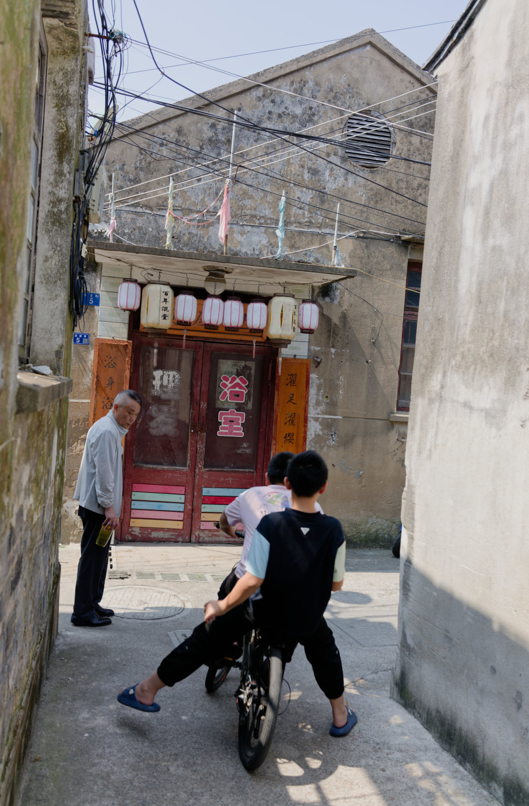
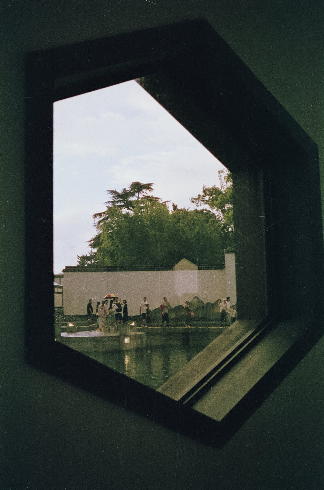
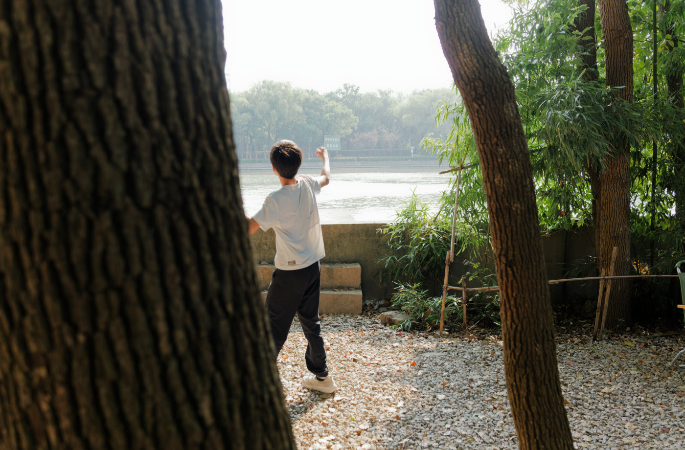
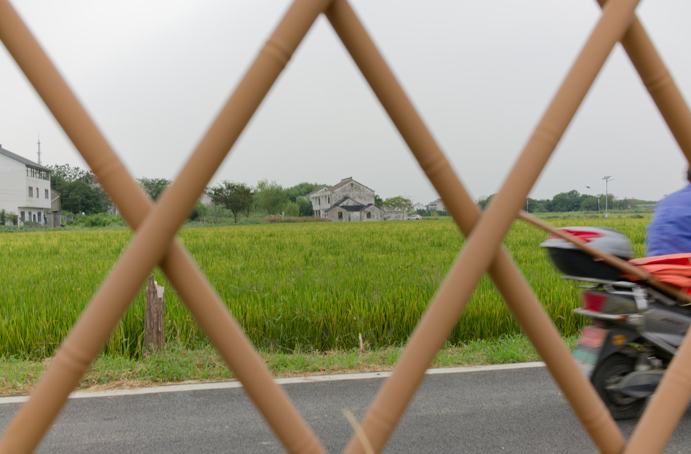
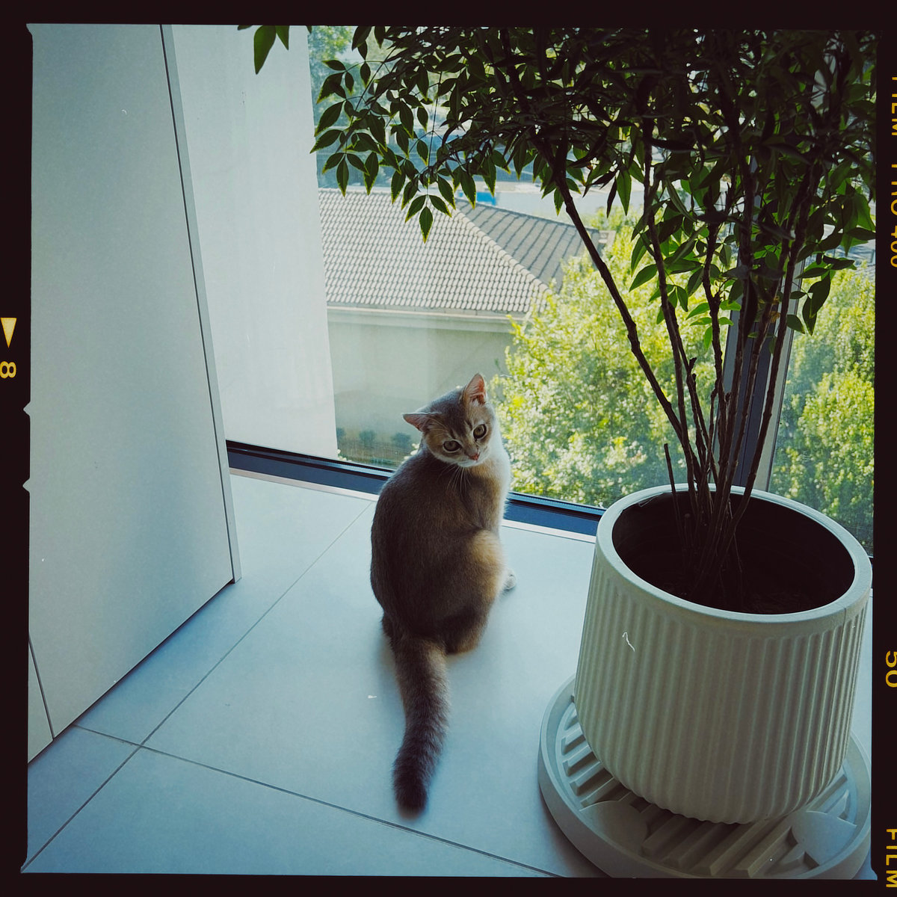

外拍活动NO.017 | 芦墟古镇·数码版
中秋节的外拍活动来到芦墟古镇，先用 EOS 50 拍完一卷胶卷，再换上 Sony RX1R II 继续记录。这里没有太多商业化的喧嚣，却保留着江南小镇真实的生活气息。
Personal Archive
这里保存一些照片、文字、器材折腾，以及我对日常生活的观察。摄影是入口，文字是线索，最后留下来的大概是一个人的观看方式。


中秋节的外拍活动来到芦墟古镇，先用 EOS 50 拍完一卷胶卷，再换上 Sony RX1R II 继续记录。这里没有太多商业化的喧嚣，却保留着江南小镇真实的生活气息。

上午拍摄结束后，在旧水厂改建的休闲空间里喝杯咖啡、看看淀山湖，也随手记录下一些安静而有趣的瞬间。

走到仁巷时，Rx1RM2 的电池已经耗尽，于是我拿起手机继续拍下沿湖道路、废弃农庄和稻田边的风景。

开车经过南河港时临时下车走走，从南河港一路走到仁巷，在阴天的江南乡村里随手记录田野、老屋、人物和秋日景象。

圆圆七个月大了，常常安静地坐在玻璃前望向窗外。刚到家时的黏人小猫，如今已经有了自己的主意。
A personal archive of photographs, notes and curiosities.